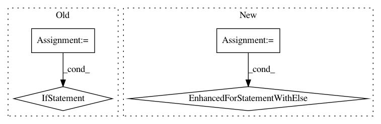

04a20177cf332004a291cee626c20a0262427796,keras/wrappers/scikit_learn.py,BaseWrapper,check_params,#BaseWrapper#Any#,59
Before Change
else:
legal_params_fns.append(self.build_fn)
legal_params = []
for fn in legal_params_fns:
legal_params += inspect.getargspec(fn)[0]
legal_params = set(legal_params)
for params_name in params:
if params_name not in legal_params:
if params_name != "nb_epoch":
raise ValueError(
"{} is not a legal parameter".format(params_name))
def get_params(self, **params):
Gets parameters for this estimator.
// Arguments
After Change
legal_params_fns.append(self.build_fn)
for params_name in params:
for fn in legal_params_fns:
if has_arg(fn, params_name):
break
else:
if params_name != "nb_epoch":
raise ValueError(
"{} is not a legal parameter".format(params_name))
def get_params(self, **params):
Gets parameters for this estimator.
// Arguments
In pattern: SUPERPATTERN
Frequency: 4
Non-data size: 4
Instances
Project Name: keras-team/keras
Commit Name: 04a20177cf332004a291cee626c20a0262427796
Time: 2017-06-21
Author: chris.kerr@athion.de
File Name: keras/wrappers/scikit_learn.py
Class Name: BaseWrapper
Method Name: check_params
Project Name: tensorlayer/tensorlayer
Commit Name: 16a31e2c9fedc654e9117b42b8144adf1d0e4900
Time: 2020-02-03
Author: 34995488+Tokarev-TT-33@users.noreply.github.com
File Name: examples/reinforcement_learning/tutorial_TRPO.py
Class Name: TRPO
Method Name: update
Project Name: deeppomf/DeepCreamPy
Commit Name: 7c0c307a2a8fbdb9b0eb82c275ca8c977aae90f3
Time: 2018-10-30
Author: harjit@harjit.moe
File Name: decensor.py
Class Name: Decensor
Method Name: decensor_all_images_in_folder
Project Name: keras-team/keras
Commit Name: ced84c4b42d9186842e4cad6c11b0c8f2c18439b
Time: 2017-06-16
Author: chris.kerr@athion.de
File Name: keras/wrappers/scikit_learn.py
Class Name: BaseWrapper
Method Name: check_params